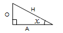
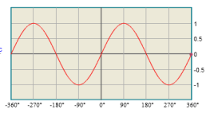

The sine function, along with cosine and tangent, is one of the three most common trigonometric functions. In any right triangle, the sine of an angle x is the length of the opposite side (O) divided by the length of the hypotenuse (H). In a formula, it is written as 'sin' without the 'e':
As an example, let's say we want to find the sine of angle C in the figure above (click 'reset' first). From the formula above we know that the sine of an angle is the opposite side divided by the hyupotenuse. The opposite side is AB and has a length of 15. The hypotenuse is AC with a length of 30. So we can write which comes out to 0.5. So we can say "The sine of 30° is 0.5 ", or
Use your calculator to find the sine of 30°. It should come out to 0.5 as above.
(If it doesn't - make sure the calculator is set to work in degrees and not
radians).
If we look at the general definition - we see that there are three variables: the measure of the angle x, and the lengths of the two sides (Opposite and Hypotenuse). So if we have any two of them, we can find the third.
In the figure above, click 'reset'. Imagine we didn't know the length of the hypotenuse H. We know that the sine of A (60°) is the opposite side (26) divided by H. From our calculator we find that sin60 is 0.866, so we can write Transposing: which comes out to 30.02 *
* Note: The lengths and angles in the figure above are rounded for clarity. Using a calculator, they will be slightly different. The calculator is correct.
For every trigonometry function such as sin, there is an inverse function that works in reverse. These inverse functions have the same name but with 'arc' in front. (On some calculators the arcsin button may be labelled asin, or sometimes sin-1.) So the inverse of sin is arcsin etc. When we see "arcsin A", we understand it as "the angle whose sin is A"
| sin30 = 0.5 | Means: The sine of 30 degrees is 0.5 |
| arcsin0.5 = 30 | Means: The angle whose sin is 0.5 is 30 degrees. |
In a right triangle, the two variable angles are always less than 90° (See Interior angles of a triangle). But we can find the sine of any angle, no matter how large, and also the sine of negative angles. For more on this see Functions of large and negative angles.

When the sine of an angle is graphed against the angle, the result is a shape similar to that above, called a sine wave.For more on this see Graphing the sine function.
In calculus, the derivative of sin(x) is cos(x).
This means that at any value of x, the rate of change or slope of sin(x) is cos(x). For more on this see Derivatives of trigonometric functions together with the derivatives of other trig functions. See also the Calculus Table of Contents.